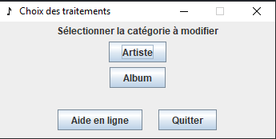

Choix du traitement voulu dans le menu
Retour à l'index
La sélection du choix permet à l'utilisateur d'accéder exactement à l'interface désirée de l'application.
Soit:
- La gestion des artistes
- La gestion des albums
- L'aide en ligne (ce que vous consultez présentment)
- Quitter l'application
Voici une image de l'interface de sélection du traitement:

Retour à l'index